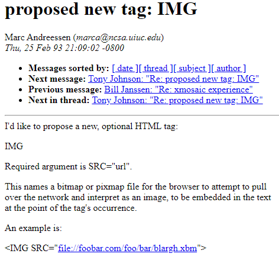
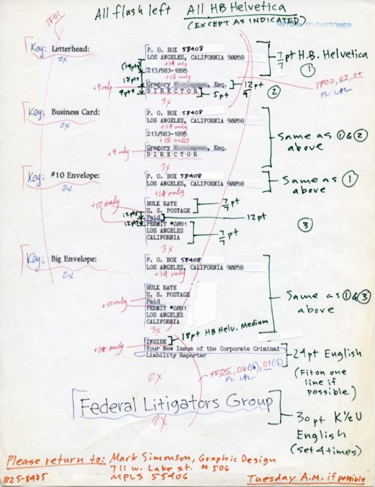

HTML Basics
Table of Contents
Terms: markup, element, tag, semantic HTML
Introduction
Hypertext Markup Language (HTML) is one of three key languages used to code webpages. HTML gives the browser information about the content and what resources to download, e.g., images, CSS files, and JavaScript files.
HTML is important for Web GIS because client applications like websites and some mobile apps use HTML pages to display web maps.
Early days
HTML is a standard format for webpage documents first developed in the early 1990s. Documents had been exchanged on the Internet mainly as plain text, but with the advent of HTML and later graphical browsers, the documents evolved into multimedia webpages.
 Figure 1. Part of the original thread where the HTML “img” tag was proposed to allow webpage documents to include images. Read the full thread at Webhistory.org.
 Figure 2. Screenshot of Mosaic, an early web browser and the first to become widely popular. Image source: Nathan Zeldes.
Figure 2. Screenshot of Mosaic, an early web browser and the first to become widely popular. Image source: Nathan Zeldes.
Markup
Markup languages, like HTML, are written instructions for how a program, like a browser, should handle content. Markup languages are not considered programming languages, but can be described more broadly as computer languages. To understand markup, think of handwritten notes on a piece of paper, describing how the text should look when printed and how the page should be structured.
 Figure 3. Example of markup—handwritten instructions for preparing a document for print. Image source: Mark Simonson.
Like handwritten markup, HTML similarly describes webpage content to a browser. The code in HTML documents is plain text with special tags that describe the content. If your content is the word “Hello” and you want the font to appear bold in a browser, you must add markup to your HTML document. Here is an example of text content within HTML tags.
Source code:
<b>Hello</b>
Result:
The text “Hello” will be rendered in the browser as Hello because the browser interprets the HTML, <b> and </b>, and understands that any text between those two tags should be styled as bold.
Tags and Elements
Opening and closing tags and content together make up an HTML element.
 Figure 4. Tags and content together make up an HTML element. Image source: Mozilla.
Figure 4. Tags and content together make up an HTML element. Image source: Mozilla.
There are dozens of HTML tags. Here are just a few common examples.
<h1> </h1>through<h6> </h6>Headings<p> </p>Paragraph of text<div> </div>A box that can help divide or structure a page<a> </a>Hyperlink (a is for anchor)<img>Displays an image file<br>Break to the next line<hr>Horizontal rule (line)<form> </form>Can contain checkboxes, textboxes, dropdowns, etc. for user input
HTML tags begin and end with angle brackets, < and >, and the closing tag has a forward slash / before the tag name.
Elements can contain other elements. The element on the outside is the parent element, and the nested element on the inside is the child. Child elements should be indented to make it clear they are children.
<div>
<h1>Nested Heading</h1>
<p>
I'm a paragraph element nested in a div. The div is my parent, and the
h1 above is my sibling. This hr is my child. See my indentation?
<hr>
</p>
</div>
Tags can have attributes that provide further information about the element. The <a> element uses the href attribute to specify the link’s URL.
See the <a href="https://geog4046.github.io">GEOG 4046 Website</a>.
The img element uses the src attribute to specify the URL of an image file to display on the page.
<img src="https://geog4046.github.io/assignment-resources/images/html-element-anatomy.png">
This div element is using the id attribute to give a unique identifier to the element so it can easily be read by JavaScript.
<div id="map"></div>
Here is an example of a complete but basic HTML document.
<!DOCTYPE html>
<html lang="en-us">
<head>
<title>Title goes here</title>
</head>
<body>
<h1>Heading Here</h1>
<p>Paragraph goes here.</p>
</body>
</html>
This would be rendered in a browser as:

Notice how the indentation works like an outline. Each element that is nested within (inside of) another element gets indented. Here, the indentation width is two spaces. Everything inside of the html tags is indented two spaces, such as the head tags. Then inside of the head tags we have title tags, so the title is indented two spaces relative to the head tag, but four spaces relative to the html tag.
The title, h1, and p elements are written on a single line in this example, but you may split elements up onto different lines (like head and body are) to make the code easier to read.
Here is a breakdown of the basic HTML skeleton presented above.
- The example begins with a tag
<!DOCTYPE html>that declares the type of document as HTML version 5 (written simply ashtml). This lets browsers understand how to interpret the code. - The opening
htmltag,<html lang="en-us">, begins the document. - The
headtag begins the part of the document giving metadata about the document. Here, only atitleis given. This appears in the tab of a browser and is used as the page title in search engine results. It should be descriptive of the page content but brief. - The opening
bodytag begins the part of the document where content should be added. This is the part of the page that will be displayed in the browser and should contain all text, images, etc. - The
h1andptags are just examples of tags that can describe content (e.g., headings and paragraphs). - The closing
bodytag signals the end of the part of the document displayed in the browser. Typically, nothing should come after the closingbodytag. - The closing
htmltag marks the end of the document.
Semantics
HTML gives semantic information about a webpage’s content, meaning HTML describes the content’s purpose or significance. For example, take the <h1> tags from the previous example:
<h1>Heading Here</h1>
When a browser or a search engine reads a webpage’s code and finds a heading tag <h1>, it assumes that the text within that tag is significant, probably describing the page’s topic, because it is the largest heading. Therefore, HTML is not simply a way to format the appearance of content, but a way to describe how the content should be interpreted. HTML has many semantic tags, such as <main> to identify the page’s primary content, <nav> to identify navigation like a menu of links to other pages in the website, or <footer> to identify the bottom area of a webpage where designers usually add a copyright, link to a privacy policy, and so on. These tags don’t change the appearance of content; they denote its significance.
Semantic tags are useful for webpage developers trying to understand code, but they are also useful for machines like search engine crawlers. Semantic markup helps machines understand what your webpage is about, which in turn can help rank the page in search engine results, among other uses.
Another machine that depends on semantic HTML tags is a screen reader application for the visually impaired. When a text-to-speech screen reader encounters the <em> (emphasis) tag, for example, it can add inflection to its voice or otherwise indicate that the content should have emphasis:
HTML isn't <em>that</em> hard, is it?
As a best practice, HTML should mainly be used for semantics, and not for aesthetics. Controlling the look of a webpage should be left to another language, CSS.
Summary
HTML code uses tags to describe content, so the browser can know how certain parts of the webpage should look and react, especially when HTML is combined with CSS and JavaScript. It is a type of markup, and should mainly be used semantically to denote the purpose or significance of content on the page.
TopBack to Lessons